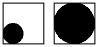

7.0.0.18
11 Conditional Combinations
| (require pict/conditional) | package： pict-lib |
These pict control flow operators decide which pict of several to use. All branches are evaluated; the resulting pict is a combination of the pict chosen by normal conditional flow with ghost applied to all the other picts. The result is a picture large enough to accommodate each alternative, but showing only the chosen one. This is useful for staged slides, as the pict chosen may change with each slide but its size and position will not.
语法
(pict-if maybe-combine test-expr then-expr else-expr)
maybe-combine =
| #:combine combine-expr
Chooses either then-expr or else-expr based on
test-expr, similarly to if. Combines the chosen, visible
image with the other, invisible image using combine-expr, defaulting to
lbl-superimpose.
例如：
> (let ([f (lambda (x) (pict-if x (disk 20) (disk 40)))]) (hc-append 10 (frame (f #t)) (frame (f #f)))) 
添加于package pict-lib的1.4版本。
语法
(pict-cond maybe-combine [test-expr pict-expr] ...)
maybe-combine =
| #:combine combine-expr
Chooses a pict-expr based on the first successful test-expr,
similarly to cond. Combines the chosen, visible image with the other,
invisible images using combine-expr, defaulting to
lbl-superimpose.
例如：
> (let ([f (lambda (x) (pict-cond #:combine cc-superimpose [(eq? x 'circle) (circle 20)] [(eq? x 'disk) (disk 40)] [(eq? x 'text) (text "ok" null 20)]))]) (hc-append 10 (frame (f 'circle)) (frame (f 'disk)) (frame (f 'text))))
添加于package pict-lib的1.4版本。
语法
(pict-case test-expr maybe-combine [literals pict-expr] ...)
maybe-combine =
| #:combine combine-expr
Chooses a pict-expr based on test-expr and each list of
literals, similarly to case. Combines the chosen, visible
image with the other, invisible images using combine-expr, defaulting
to lbl-superimpose.
例如：
> (let ([f (lambda (x) (pict-case x [(circle) (circle 20)] [(disk) (disk 40)] [(text) (text "ok" null 20)]))]) (hc-append 10 (frame (f 'circle)) (frame (f 'disk)) (frame (f 'text))))
添加于package pict-lib的1.4版本。
These functions conditionally show or hide an image, essentially choosing
between pict and (ghost pict). The only difference between
the two is the default behavior and the opposite meaning of the show?
and hide? booleans. Both functions are provided for mnemonic purposes.
添加于package pict-lib的1.4版本。